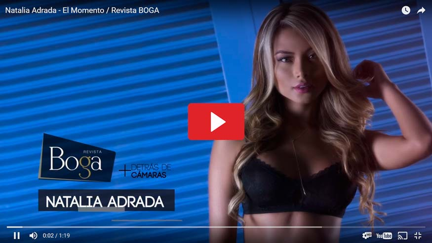

Natalia Adrada
Por: Leidy Díaz OrtizAgradecemos a:
GUADALUPE UNDERWEAR por la lencería
Visítalos en Instagram: @guadalupeunderwear
Cra 14A No. 82 -16 piso 2 zona T Bogotá
TEL: 3176413759
InModels- AGENCIA
Visítalos en Instagram:
@InModelsGroup
“El secreto para mantenerme en forma, está en la buena alimentación”.
Tras 5 años en el modelaje y a sus 23 de edad esta talentosa mujer descresta a sus seguidores con sus curvas y hermoso rostro ante las cámaras. Su belleza le ha dado el poder de seducir en cada foto. Pero ¿cuál es el secreto de Natalia para mantenerse en forma? Nos confesó que se dedica a hacer ejercicio día por medio y se preocupa por alimentarse saludablemente: “consumir alimentos saludables es la clave para verme y sentirme bien”. Una de las proteínas que consume con mayor frecuencia es el salmón.
Natalia considera importante la formación académica; actualmente está terminando sus estudios de Ingeniería Industrial y sueña con ejercer de manera exitosa esta profesión. Se esfuerza por cumplir todos los compromisos, administrando el tiempo para que el modelaje no interfiera con su educación, pero reconoce que estar pendiente de la universidad y el trabajo al mismo tiempo, le exige ser muy disciplinada.
{kind=link}
{kind=link}
{kind=link}
{kind=link}
{kind=link}
{kind=link}
Esta joven se caracteriza por ser luchadora, pero detrás de esa mujer organizada, estricta y disciplinada, se esconde su parte dulce y sensible, Natalia nos contó que no puede evitar llorar cuando ve su película favorita – En busca de la felicidad -. Seguramente muchos de ustedes también terminaron con el ojo aguado al verla.
Aunque es muy responsable con su profesión como modelo, dice que modelar es su hobbie, porque su verdadera pasión es la Ingeniería Industrial y “si tuviera que escoger entre las dos profesiones, escogería la Ingeniería”.
Instagram: @natalia_adrada
